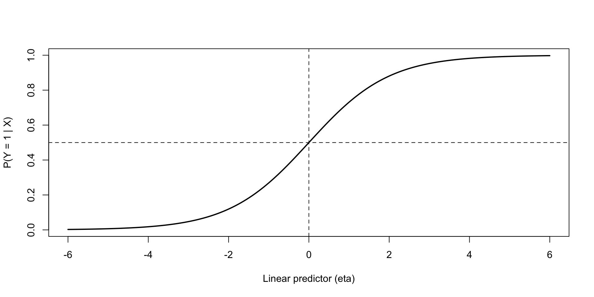
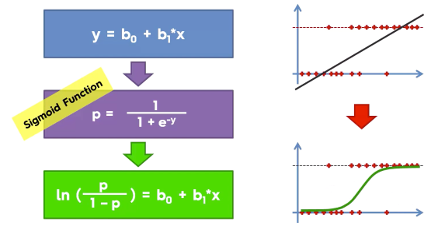
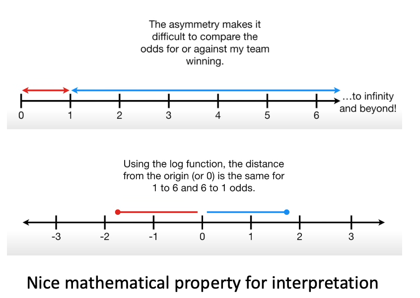
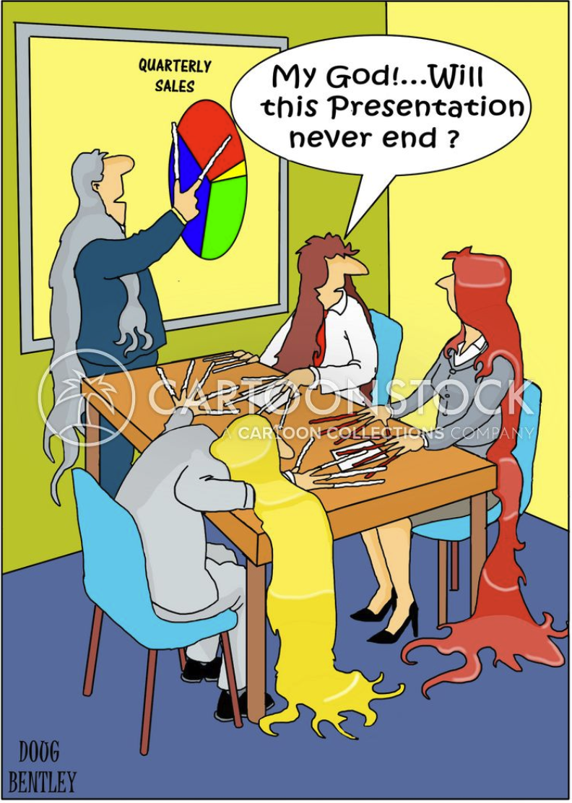

2026-11-04
Woman teaching geometry, from a fourteenth-century edition of Euclid’s geometry book.
By the end of this lecture, you should be able to:
TIPS WHEN READING THESE LECTURE NOTES
These notes use mathematical notation to make the connections among linear regression, GLMs, and logistic regression explicit.
So far, regression has modeled a quantitative response using a linear combination of predictors: \[ E(Y\mid X)=\beta_0+\beta_1X_1+\cdots+\beta_pX_p. \]
This framework is powerful because it lets us:
But what changes when the response is binary?
Suppose
\[ Y\in\{0,1\}. \]
Examples include:
For a given predictor vector \(X\), the quantity we want to model is
\[ \pi(X)=P(Y=1\mid X). \]
Because \(Y\) is binary,
\[ E(Y\mid X)=P(Y=1\mid X)=\pi(X). \]
A tempting model is the linear probability model:
\[ P(Y=1\mid X)=\beta_0+\beta_1X_1+\cdots+\beta_pX_p. \]
But it creates several problems:
We need to keep the useful linear predictor while changing how it connects to the response.
For problems with binary outcomes that can represent success/failure, we can model each independent observation as a Bernoulli trial.
\[ \boxed{Y_i\mid X_i \sim \text{Bernoulli}(\pi_i)}, \] where, \[ \pi_i=\mathbb{P}(Y_i=1\mid X_i). \]
A single trial that follows a Bernoulli distribution has
\[ E(Y_i\mid X_i)=\pi_i, \qquad Var(Y_i\mid X_i)=\pi_i(1-\pi_i). \]
Note
Unlike OLS, the variance is not constant. It changes with the conditional mean \(\pi_i\).
A unified framework for regression
We need a unified, consistent framework that can:
model specific assumptions of linearity for diverse data types
The usual linear regression model is too restrictive.
We would still like to keep the familiar linearcombination of explanatory variables,
\[ \eta_i=\beta_0+\beta_1x_{i1}+\cdots+\beta_px_{ip}, \]
while allowing the distribution of the response and the relationship between its expected value and the predictors to change according to the problem.
Enter Generalized Linear Models (GLMs)!
What can GLMs do for us?
They provide a common language for ordinary linear regression, logistic regression, and other regression models for outcomes such as counts.
A generalized linear model (GLM) is a model in which:
There are \(3\) components to a GLM:
Random component: specifies the probability distribution of the response variable.
Systematic component: specifies the explanatory variables \((X_1,X_2,\ldots,X_k)\) and their linear combination: \[\eta=\beta_0+\beta_1X_1+\cdots+\beta_kX_k.\]
Link function: specifies relationship between the expected value of the response and the systematic component: \(g\!\left(\mathbb E(Y\mid X)\right)=\eta.\)
Things to note about a GLM
In OLS, we typically assume errors are independent of \(X\) and have constant conditional variance. In a GLM, the conditional variance may instead be variable, depend on the conditional mean.
The generalization retains the familiar linear combination of predictors while allowing for other distributions and link functions.
For a binary response \(Y_i\in\{0,1\}\), the conditional mean is the probability of the positive outcome:
\[\mathbb E(Y_i\mid X_i)=P(Y_i=1\mid X_i)=\pi_i.\]
To round up the GLM specifications of logistic regression:
Random component: \(Y_i\mid X_i\sim\operatorname{Bernoulli}(\pi_i)\), equivalently a binomial variable with one trial and success probability \(\pi_i\).
Systematic component: \(\eta_i=\beta_0+\beta_1x_{i1}+\cdots+\beta_kx_{ik}\).
Link function: the log-odds or logit function,
\[g(\pi_i)=\log\left(\frac{\pi_i}{1-\pi_i}\right)=\eta_i.\]
This completes the GLM specification.
The linear predictor \(\eta=X\beta\) can take any value from \(-\infty\) to \(+\infty\).
But a probability must satisfy
\[ 0\leq \pi\leq 1. \]
We therefore need:
The standard choice for binary logistic regression is the logit.

To find the odds of an event, you can use counts of events. You can also divide the proportion of the events that did happen by the proportion of events that did not happen. Odds compare:
How likely is the event to occur relative to not occurring?
If an event has probability \(\pi\), its odds are \[ \boxed{\text{odds}=\frac{\pi}{1-\pi}.} \] Conversely, \(\pi=\frac{\text{odds}}{1+\text{odds}}\).
Example
For example, \(72.4\%\) of people who regularly take Vitamin C still get colds. Hence the probability of getting a cold is \(\pi=0.724\). The odds of getting a cold are \(\frac{0.724}{1-0.724}\approx 2.62.\).
This is often expressed as “the odds of getting a cold are 2.62 to 1.” Another way to interpret this is that for every one person that does not develop a cold, 2.876 people do develop colds, meaning the event is \(2.86\) times as likely to occur as not occur.
Odds range from \(0\) to \(\infty\).
Odds are positive but asymmetrical around the neutral value \(1\).
Odds against an event that is highly likely can vary in the range \(0-1\) but odds in favor can go from \(1-\infty\).
Taking the natural logarithm gives the log-odds, or logit:
\[ \boxed{\operatorname{logit}(\pi)=\log\left(\frac{\pi}{1-\pi}\right).} \]
Now the scale runs from \(-\infty\) to \(+\infty\):
This is exactly the scale on which we place the linear predictor.

Logistic regression assumes
\[ \boxed{ \log\left(\frac{\pi_i}{1-\pi_i}\right) = \beta_0+\beta_1x_{i1}+\cdots+\beta_px_{ip} } \]
or more compactly,
\[ \operatorname{logit}(\pi_i)=\eta_i=X_i\beta. \]
Interpreting a Coefficient: Log-Odds Scale
Logistic regression is linear in the coefficients on the log-odds scale. \[ \operatorname{logit}(\pi)=\beta_0+\beta_1X_1+\cdots+\beta_pX_p, \]
\(\beta_j\) is the expected change in log-odds associated with a one-unit increase in \(X_j\), holding the other predictors fixed.
This interpretation is mathematically clean, but log-odds are not especially intuitive. So we exponentiate the coefficient and that gives us the odds ratio.
Solving the logit equation for \(\pi\) gives
\[ \boxed{ \pi_i = \frac{e^{\eta_i}}{1+e^{\eta_i}} = \frac{1}{1+e^{-\eta_i}} } \]
where
\[ \eta_i=\beta_0+\beta_1x_{i1}+\cdots+\beta_px_{ip}. \]
The logistic function maps every real-valued \(\eta\) to a valid probability between \(0\) and \(1\).
Recall that the logit is the log odds function. Exponentiating the logit yields the odds: \[ \omega = \frac{\pi}{1-\pi} = e^{\beta_0+\beta_1X_1+\cdots+\beta_pX_p} \]
It is also helpful to think about the coefficients in terms of changes in the explanatory variables.
Consider a logistic regression model with one predictor \(X\): \[ \omega(X)=e^{\beta_0+\beta_1X} \]
For a one-unit increase in \(X\), the ratio of the odds becomes
\[ \frac{\omega(X+1)}{\omega(X)} =\frac{e^{\beta_0+\beta_1(X+1)}}{e^{\beta_0+\beta_1X}} =\boxed{e^{\beta_1}} \]
Thus, if \(X\) increases by one unit, the odds that \(Y=1\) will change by a factor of \(e^{\beta_1}\).
To compare proportions, we use differences. To compare odds, we use ratios. The odds ratio (OR) compares the odds of an event occurring at two different values of an explanatory variable: \[\scriptsize OR=\frac{\text{Odds at }X=A}{\text{Odds at }X=B} =\frac{\omega(A)}{\omega(B)} \]
For a one-unit increase in \(X\), the odds ratio is \(e^{\beta_1}\).
For example, an odds ratio of \(1.25\) means that the odds of the event occurring are 1.25 times as large (25% higher) for a one-unit increase in \(X\).
An odds ratio of \(0.80\) means that the odds are 0.80 times as large (20% lower).
Note
An odds ratio describes a multiplicative change in odds, not a fixed change in probability. The same odds ratio produces different changes in probability depending on the initial probability of the event. For example, an odds ratio of 2 doubles the odds of an event:
We now know the form of the model: the explanatory variables combine linearly on the log-odds scale, and the inverse-logit function gives a predicted probability for each observation. But how should we choose the coefficients \(\beta_0,\beta_1,\ldots,\beta_p\)?
In ordinary least squares, we found coefficients that minimized the sum of squared residuals.
For a Bernoulli response, that criterion is not derived from the response distribution we have chosen. Instead, we ask a more general question:
Which model makes the data we actually observed most plausible?
This is the idea behind maximum likelihood estimation (MLE).
Maximum Likelihood Estimation
It is a general procedure for obtaining estimates of model parameters, not specific to a logistic regression model. We specify the probability model for the data and search for the parameter values that maximize the likelihood of what was observed.
\(\color{blue}{\textbf{Which model makes the data we actually observed most plausible?}}\)
This is the question addressed by maximum likelihood estimation.
The same expression is now viewed as a function of the unknown parameters:
\[\boxed{L(\theta)=P(\text{observed data}\mid\theta).}\]
Likelihood is not the probability that a parameter is true. It is a way to compare how well candidate parameter values account for the observed data under the assumed model.
Suppose we observe 7 heads and 3 tails from 10 independent coin flips. If \(p\) denotes the probability of heads, the likelihood of the observed sequence is
\[L(p)=p^7(1-p)^3.\]
Here the data (7 heads, 3 tails) are fixed, and \(p\) is the quantity we vary to find where the likelihood is maximized.
\[\boxed{\hat p=\frac{7}{10}=0.7.}\]
In logistic regression, we use the same principle, but each observation has a probability \(\pi_i\) determined by its predictors and the regression coefficients.
Suppose linear regression errors are Normal:
\[ Y_i=X_i\beta+\epsilon_i, \qquad \epsilon_i\sim N(0,\sigma^2). \]
Under this model, maximizing the likelihood with respect to \(\beta\) is equivalent to minimizing the residual sum of squares.
So OLS is not disconnected from MLE:
\[ \boxed{\text{OLS is the MLE for }\beta\text{ under the usual Normal-error model.}} \]
MLE therefore gives us a bridge from linear regression to other response distributions.
For observation \(i\),
\[ P(Y_i=y_i\mid X_i) = \pi_i^{y_i}(1-\pi_i)^{1-y_i}. \]
Assuming independent observations, the likelihood is
\[ \boxed{ L(\beta) = \prod_{i=1}^{n} \pi_i^{y_i}(1-\pi_i)^{1-y_i} } \]
with
\[ \pi_i=\frac{1}{1+e^{-X_i\beta}}. \]
Products of many probabilities can become numerically tiny, so software works with the log-likelihood:
\[ \ell(\beta) = \sum_{i=1}^{n} \left[ y_i\log(\pi_i)+(1-y_i)\log(1-\pi_i) \right]. \]
Maximizing \(\ell(\beta)\) is equivalent to minimizing the negative log-likelihood:
\[ -\ell(\beta). \]
There is generally no simple closed-form solution for \(\hat\beta\), so software uses numerical optimization.
We will model a binary outcome, admitted, using:
hours: hours spent preparing;prior_score: a prior assessment score.This is a small teaching dataset created to illustrate the mechanics of fitting and interpreting a logistic regression model.
A straight line is not naturally constrained to produce valid probabilities.
We fit
\[ \operatorname{logit}\{P(Y=1\mid X)\} = \beta_0+\beta_1(\text{hours})+\beta_2(\text{prior score}). \]
Call:
glm(formula = admitted ~ hours + prior_score, family = binomial(link = "logit"),
data = admit_data)
Coefficients:
Estimate Std. Error z value Pr(>|z|)
(Intercept) -10.37291 3.16257 -3.280 0.001038 **
hours 0.52137 0.15610 3.340 0.000838 ***
prior_score 0.08955 0.03393 2.639 0.008315 **
---
Signif. codes: 0 '***' 0.001 '**' 0.01 '*' 0.05 '.' 0.1 ' ' 1
(Dispersion parameter for binomial family taken to be 1)
Null deviance: 67.301 on 49 degrees of freedom
Residual deviance: 44.510 on 47 degrees of freedom
AIC: 50.51
Number of Fisher Scoring iterations: 5 Generalized Linear Model Regression Results
==============================================================================
Dep. Variable: admitted No. Observations: 50
Model: GLM Df Residuals: 47
Model Family: Binomial Df Model: 2
Link Function: Logit Scale: 1.0000
Method: IRLS Log-Likelihood: -22.255
Date: Wed, 04 Nov 2026 Deviance: 44.510
Time: 22:47:36 Pearson chi2: 41.0
No. Iterations: 5 Pseudo R-squ. (CS): 0.3661
Covariance Type: nonrobust
===============================================================================
coef std err z P>|z| [0.025 0.975]
-------------------------------------------------------------------------------
Intercept -10.3729 3.163 -3.280 0.001 -16.571 -4.174
hours 0.5214 0.156 3.340 0.001 0.215 0.827
prior_score 0.0896 0.034 2.639 0.008 0.023 0.156
===============================================================================Interpret each slope holding the other predictor fixed.
A confidence interval for \(\beta_j\) can be exponentiated to obtain a confidence interval for the odds ratio.
An odds-ratio interval containing \(1\) corresponds to a coefficient interval containing \(0\).
Logistic regression directly produces estimated probabilities:
\[ \hat\pi_i=P(Y_i=1\mid X_i;\hat\beta). \]
Suppose we want the estimated probability for a case with 7 preparation hours and a prior score of 80.
The output is a probability, not a class label.
To see how the probability changes when hours increases from 7 to 8 while prior_score = 80:
This probability difference is local to the chosen predictor values; it is not constant everywhere.
As in linear regression, categorical predictors enter through indicator/dummy variables.
For example,
\[ \operatorname{logit}(\pi) = \beta_0+\beta_1X+\beta_2I(\text{Group}=B). \]
Then \(e^{\beta_2}\) compares the odds for Group B with the reference group, holding the other predictors fixed.
Note
The coding/reference category matters for interpretation, just as it did in multiple linear regression.
There is no direct logistic-regression equivalent of the OLS interpretation
“\(R^2\) is the proportion of variance in \(Y\) explained by the predictors.”
Likelihood-based summaries compare how well models explain the observed binary outcomes.
A common example is McFadden’s pseudo-\(R^2\):
\[ R^2_{McFadden}=1-\frac{\ell(\text{fitted model})}{\ell(\text{intercept-only model})}. \]
Warning
Pseudo-\(R^2\) values should not be interpreted as percent variance explained and should not be compared numerically to OLS \(R^2\) as if they were the same statistic.
Logistic regression does not require:
But it does rely on important conditions:
Standard logistic regression treats observations as independent contributions to the likelihood.
Ask:
If observations are meaningfully clustered, the basic independent Bernoulli model may understate uncertainty and a different modeling strategy may be needed.
Logistic regression does not assume
\[ P(Y=1\mid X) \]
is linear in a continuous predictor.
It assumes the logit is linear in the predictors:
\[ \operatorname{logit}\{P(Y=1\mid X)\} = \beta_0+\beta_1X_1+\cdots+\beta_pX_p. \]
Nonlinear terms, splines, or transformations can be added when a straight-line relationship on the logit scale is too restrictive.
As in multiple linear regression, highly correlated predictors can make coefficient estimates unstable.
Consequences include:
Perfect multicollinearity makes the model unidentified.
The conceptual diagnostic lesson carries over from linear regression: inspect relationships among predictors and avoid redundant encodings.
Complete separation occurs when a predictor, or combination of predictors, perfectly separates the observed 0s and 1s.
For example:
Then the likelihood can keep improving as a coefficient grows toward \(\pm\infty\).
Symptoms include:
Note
Separation is an important addition to the usual regression diagnostic checklist because it is specific to binary-response modeling.
Unusual observations can still strongly affect a logistic regression model.
However, “residuals” are more complicated than in OLS because a binary outcome does not have a single Normal-error residual structure.
Common diagnostic quantities include:
The goal is the same as before: identify observations that have disproportionate influence and investigate why.
For OLS, the raw residual
\[ e_i=y_i-\hat y_i \]
has a central role in diagnostics.
For logistic regression, \(y_i\in\{0,1\}\) and \(\hat\pi_i\in(0,1)\), so raw residuals have a very different distribution and variance.
There are multiple residual definitions designed for different purposes.
Caution
Do not mechanically apply Normal Q-Q plots or homoscedasticity checks from OLS to logistic regression. The response variance is inherently \(\pi_i(1-\pi_i)\).
After MLE finds \(\hat\beta\), software estimates uncertainty from the curvature of the log-likelihood near its maximum.
Typical output includes:
The null hypothesis for a slope is commonly
\[ H_0:\beta_j=0, \]
which is equivalent to
\[ H_0:e^{\beta_j}=1 \]
on the odds-ratio scale.
| Question | Linear Regression | Logistic Regression |
|---|---|---|
| What is modeled? | \(E(Y\mid X)\) | \(P(Y=1\mid X)\) |
| Response distribution | Normal model for errors | Bernoulli |
| Link | Identity | Logit |
| Predictor scale | Mean response | Log-odds |
| Fitted values | Unbounded | Between 0 and 1 |
| Main fitting criterion | RSS / OLS | Likelihood / MLE |
| Slope interpretation | Additive change in mean \(Y\) | Additive change in log-odds / multiplicative change in odds |
Both use a linear predictor \(X\beta\); they differ in the response distribution and link.
Think of logistic regression as a connected modeling process, not merely as a formula for drawing an S-shaped curve.
First, we specify a binary response and a Bernoulli model for the conditional distribution \(Y_i\mid X_i\). This tells us that the conditional mean is the event probability \(\pi_i\) and that the conditional variance is \(\pi_i(1-\pi_i)\).
Second, we retain the familiar linear combination of predictors, \(\eta_i=\beta_0+\beta_1x_{i1}+\cdots+\beta_px_{ip}\). The logit link equates that linear predictor with the log-odds of the event. Inverting the link produces a valid probability:
\[ \boxed{X_i\longrightarrow\eta_i=X_i\beta \longrightarrow\pi_i=\frac{1}{1+e^{-\eta_i}}.} \]
Finally, we use maximum likelihood to estimate the coefficients: choose the values that make the observed 0/1 outcomes most plausible under the model. We can then interpret coefficients as changes in log-odds, exponentiated coefficients as odds ratios, and fitted values as predicted probabilities.
The key lesson is that the linearity lives on the transformed mean scale. Logistic regression estimates probabilities; a separate decision rule is needed before we can turn those probabilities into binary class predictions.
A fitted logistic regression model gives
\[ \hat\pi_i=P(Y_i=1\mid X_i). \]
That is a probability estimate, not yet a dichotomous prediction.
To turn probabilities into labels, we must add a decision rule, for example
\[ \hat y_i= \begin{cases} 1, & \hat\pi_i>c\\ 0, & \hat\pi_i\leq c \end{cases} \]
for some threshold \(c\).
Important
Logistic regression is not, by itself, a dichotomous classification algorithm. It becomes one when its predicted probabilities are combined with a decision rule.
This lecture stops at probability modeling.
The next lecture will ask what happens after we choose a decision rule:
Those questions lead to classification metrics, confusion matrices, ROC curves, and related evaluation tools.
For now, remember the separation:
\[ \boxed{\text{Logistic regression estimates probabilities.}} \]
\[ \boxed{\text{A decision rule converts probabilities to class labels.}} \]
